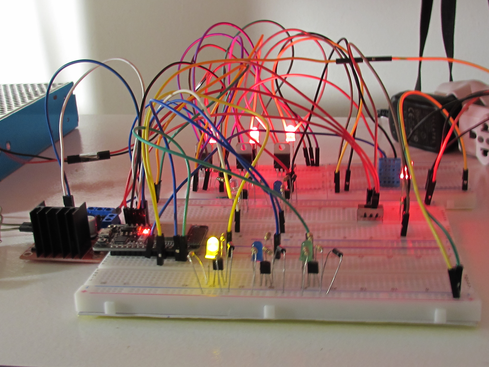
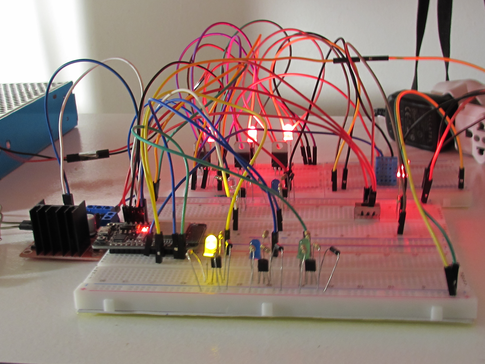

Meus Projetos

Casa das Janas
Website completo para pousada boutique em Trancoso-BA, incluindo sistema de reservas, galeria de fotos e design responsivo que captura a essência acolhedora do local.
Desafio
Criar uma experiência digital que transmitisse a atmosfera intimista e descontraída da pousada, mantendo funcionalidade para reservas online e navegação intuitiva.
Amolde
Plataforma de e-commerce especializada em moldes profissionais para moda íntima, com sistema de categorização avançada e identidade visual que transmite profissionalismo e confiança.
Desafio
Desenvolver uma plataforma que facilitasse a busca e compra de moldes técnicos, criando uma experiência de usuário intuitiva para confeccionistas profissionais.
VOLX
Criação de marca e identidade visual para linha de camisetas, desenvolvendo conceito visual que reflete a essência urbana e contemporânea da marca.
Desafio
Desenvolver uma identidade visual única e memorável que se destacasse no mercado de moda urbana, criando conexão emocional com o público-alvo.
Zambe - Artista Musical
Produção fonográfica completa para artista friburguense, incluindo álbum "Encontro dos Rios" e desenvolvimento de identidade sonora que mistura hip-hop, trap e reggae.
Desafio
Capturar a essência cultural do Cordoeira e traduzir em produção musical profissional, mantendo a autenticidade do artista e criando material comercialmente viável.


Sistema de Cortina Automatizada
Desenvolvimento de sistema mecatrônico para automação de cortinas residenciais, integrando sensores, atuadores e controle inteligente para conforto e eficiência energética.
Desafio
Criar um sistema robusto e confiável que funcionasse em diferentes condições ambientais, com interface de usuário intuitiva e integração com sistemas de automação residencial.


 

E-Vaso Regui - Sistema de Vaso Automatizado
Sistema inteligente de vaso automatizado que monitora umidade do solo, temperatura ambiente, luminosidade e envia dados em tempo real para aplicativo móvel, permitindo controle remoto da irrigação e acompanhamento da saúde das plantas.
Desafio
Desenvolver um sistema IoT robusto que integrasse sensores múltiplos, atuadores de irrigação, conectividade Wi-Fi e aplicativo móvel para monitoramento e controle remoto, garantindo precisão nos dados e confiabilidade na operação.


Projeto da Leira
Desenvolvimento de plataforma digital focada em soluções sustentáveis e tecnológicas, combinando design moderno com funcionalidades avançadas para experiência do usuário otimizada.
Desafio
Criar uma plataforma que integrasse múltiplas funcionalidades mantendo a simplicidade na navegação e enfatizando os valores de sustentabilidade e inovação.
Artefá - Produções Audiovisuais
Estúdio de produção audiovisual especializado em conteúdo musical, videoclipes e produções cinematográficas com equipamentos profissionais.
Desafio
Estabelecer um estúdio completo que atendesse às demandas do mercado audiovisual local, oferecendo qualidade profissional e criatividade artística.
Project Strada
Produção fonográfica para projeto musical inovador, combinando diferentes gêneros e técnicas de gravação para criar sonoridade única.
Desafio
Fusão de estilos musicais distintos em uma produção coesa, mantendo qualidade técnica e expressão artística autêntica.